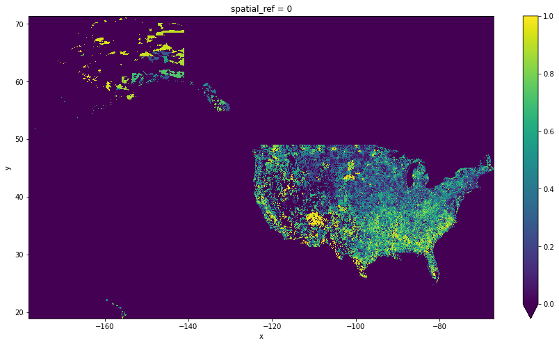

from datetime import datetime
import matplotlib.pyplot as plt
from pystac_client import Client
import rasterio as rio
import rioxarray
import stackstac
import xarray as xrOpen and Plot Data
This notebook demonstrates how to open the plot data using rioxarray, stackstac and pystac_client.
- Author: Aimee Barciauskas
- Lasted Updated Date: August 3, 2022
Accessing the data
The data is in a protected bucket. Please request access by emailng aimee@developmentseed.org providing your affiliation, interest in or expected use of the dataset, and an AWS IAM role or user Amazon Resource Name (ARN). Once you have provided the role you will use to access the data, the team will add that role or user ARN to the permitted list of identities which can assume a role with read access to the data. The code in create_rio_session.py can then be used to assume this read-access role, identified in that code by the environment variable AWS_ROLE.
%run -i 'create_rio_session.py'Declare your collection of interest
You can discover available collections the following ways:
- Use the
{STAC_API_URL}/collectionsAPI endpoint (JSON response) - Programmatically using
pystac(see example in thelist-collections.ipynbnotebook - In the STAC Browser: http://delta-staging-stac-browser.s3-website-us-east-1.amazonaws.com/
STAC_API_URL = 'https://staging-stac.delta-backend.com/'
collection = 'social-vulnerability-index-overall-nopop'Create an xarray.DataArray
s3_link = items[0].assets['cog_default'].href
da = rioxarray.open_rasterio(s3_link)
da<xarray.DataArray (band: 1, y: 6297, x: 13353)>
[84083841 values with dtype=float32]
Coordinates:
* band (band) int64 1
* x (x) float64 -178.2 -178.2 -178.2 ... -66.98 -66.97 -66.96
* y (y) float64 71.38 71.37 71.36 71.35 ... 18.94 18.93 18.92 18.91
spatial_ref int64 0
Attributes:
_FillValue: -3.3999999521443642e+38
scale_factor: 1.0
add_offset: 0.0da = da.squeeze('band', drop=True)
da<xarray.DataArray (y: 6297, x: 13353)>
[84083841 values with dtype=float32]
Coordinates:
* x (x) float64 -178.2 -178.2 -178.2 ... -66.98 -66.97 -66.96
* y (y) float64 71.38 71.37 71.36 71.35 ... 18.94 18.93 18.92 18.91
spatial_ref int64 0
Attributes:
_FillValue: -3.3999999521443642e+38
scale_factor: 1.0
add_offset: 0.0plt.figure(figsize=[15, 8])
da.plot(x='x', y='y', vmin=0, vmax=1)<matplotlib.collections.QuadMesh at 0x12adb95b0>/Users/leo/development-seed/veda/veda-documentation/env-veda-documentation/lib/python3.8/site-packages/matplotlib/colors.py:621: RuntimeWarning: overflow encountered in multiply
xa *= self.N